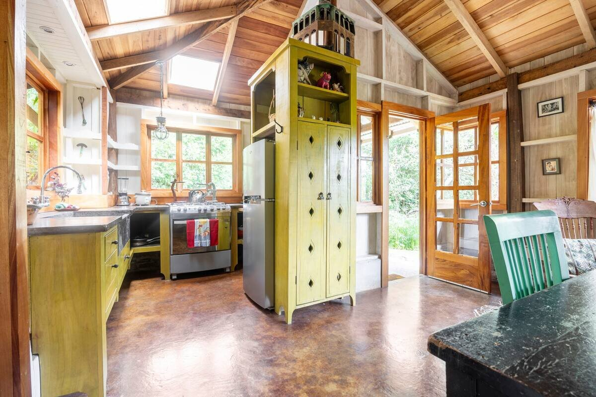

Photo Gallery
Galería de Fotos





Compact Cottage at Finca la Querencia
Cabaña Compacta en Finca la Querencia
An idyllic spot next to a pond nestled among fruit trees in an organic coffee plantation. The Lilly Pad is one of several houses on Finca la Querencia, a sustainable homestead farm combining dairy and animal husbandry with aquaculture, organic vegetables, coffee and more. We are located at the end of the road in a private valley, very close yet completely removed from the tourist hustle and bustle of Monteverde.
The Lilly Pad is a compact cottage custom built on three levels, with lots of windows and natural light. The kitchen, dining area and a small sitting area are on the entry level. The living room is down a few stone steps with the sleeping loft above it. Access to the sleeping loft is via a narrow staircase that is built in above bookshelves.
The kitchen has custom made concrete counter tops and sink, and has a new stove and refrigerator. The bathroom has an insulated cement tub and a shower. The solar hot water heater provides a great deal of very hot water. The house has a large walk-in closet and laundry drying greenhouse. There is an outdoor patio overlooking the tilapia pond and surrounded by greenery.
TRANSPORTATION: We strongly recommend that you have a car, preferably one with All-Wheel Drive (AWD). If you do not have a car please contact us so we can help you assess if this is a suitable location for you. While we are not far from Monteverde, the walk to town is a substantial uphill hike, though enthusiastic hikers will find it quite enjoyable. Taxis will come to the farm, but the cost is typically around $20 each way.
Un lugar idílico junto a un estanque entre árboles frutales en una plantación de café orgánico. The Lilly Pad es una de varias casas en Finca la Querencia, una granja sostenible que combina ganadería lechera y cría de animales con acuicultura, vegetales orgánicos, café y más. Estamos ubicados al final del camino en un valle privado, muy cerca pero completamente alejados del bullicio turístico de Monteverde.
The Lilly Pad es una cabaña compacta construida a medida en tres niveles, con muchas ventanas y luz natural. La cocina, el área de comedor y una pequeña sala de estar están en el nivel de entrada. La sala está unos escalones de piedra más abajo con el desván para dormir arriba. El acceso al desván es a través de una escalera estrecha construida sobre estanterías.
La cocina tiene encimeras y fregadero de concreto hechos a medida, y tiene una estufa y refrigerador nuevos. El baño tiene una bañera de cemento aislada y una ducha. El calentador solar de agua proporciona una gran cantidad de agua muy caliente. La casa tiene un gran vestidor y un invernadero para secar ropa. Hay un patio al aire libre con vista al estanque de tilapias y rodeado de vegetación.
TRANSPORTE: Recomendamos encarecidamente que tenga un automóvil, preferiblemente uno con tracción en las cuatro ruedas (AWD). Si no tiene un automóvil, contáctenos para ayudarlo a evaluar si esta es una ubicación adecuada para usted. Aunque no estamos lejos de Monteverde, la caminata al pueblo es una subida considerable, aunque los excursionistas entusiastas la encontrarán bastante agradable. Los taxis vienen a la finca, pero el costo es típicamente alrededor de $20 por trayecto.
Included:
• Water, electricity, internet
• Weekly cleaning
• 1 month minimum rental
• Renters fill gas tanks for stove
Incluido:
• Agua, electricidad, internet
• Limpieza semanal
• Alquiler mínimo de 1 mes
• Inquilinos llenan tanques de gas
The Lilly Pad is part of Finca la Querencia, which offers organic gardens, swimming pond, hot tub, community rancho, farm products, and more!
The Lilly Pad es parte de Finca la Querencia, que ofrece jardines orgánicos, estanque para nadar, jacuzzi, rancho comunitario, productos de la finca, ¡y más!
Visit Farm Page Visitar Página de la Finca